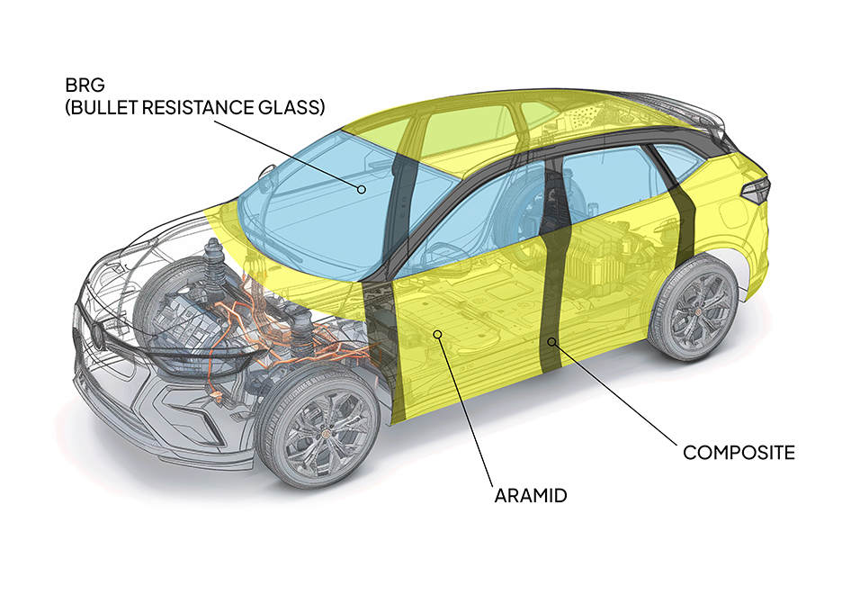
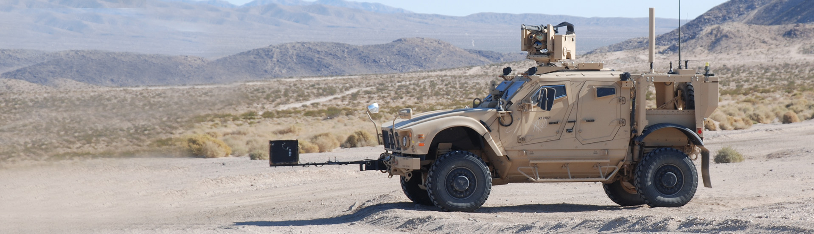
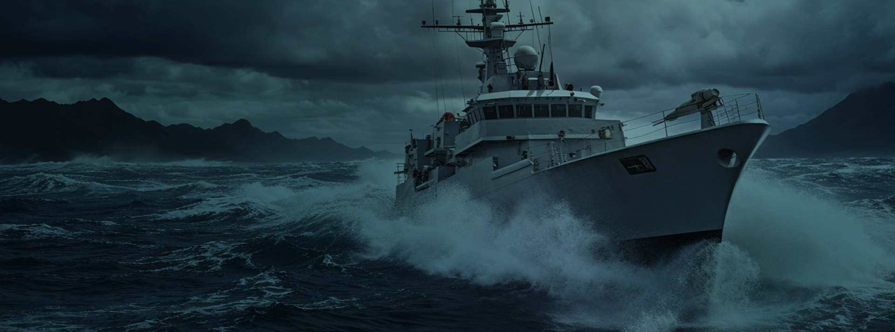

All Glass Aramid Composites Special applications
Glass
B33 / I-B33 / I-B33 PRO Transparency is part of protection. Know the glass specified in your proposal and the documentation that supports it.
What to confirm for your project + Vehicle and configuration, exact product reference, standard and documentation scope, integration, availability and local support terms.
Contact the team 
Aramid
A33 Material for areas that do not require transparency. Its application is defined as part of the overall system design.
What to confirm for your project + Vehicle and configuration, exact product reference, standard and documentation scope, integration, availability and local support terms.
Contact the team 
Composites
C33 / C33 PRO Composites for the protection architecture. Selection depends on project requirements and technical validation.
What to confirm for your project + Vehicle and configuration, exact product reference, standard and documentation scope, integration, availability and local support terms.
Contact the team 
Special applications
Defense and Police Solutions for land and naval platforms and public security. Each application has its own requirements and documentation.
What to confirm for your project + Vehicle and configuration, exact product reference, standard and documentation scope, integration, availability and local support terms.
Contact the team
Support goes further. Corporate product families. The Mexico catalogue, data sheets and terms require local confirmation. A product family alone does not establish compatibility or a protection level.